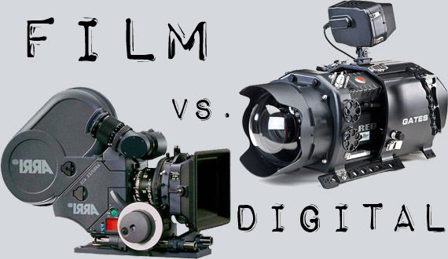

The long time argument: Film vs Digital

Since the birth of digital video, there has been a growing argument among independent filmmakers and major figures in Hollywood over whether shooting on digital “kills” the idea of film. While the question may seem ridiculous or even snobbish, it has deeper concerns like economics, aesthetics, archival longevity, and projection. Economically, the shift to digital significantly reduced production costs by removing the need for film stock, laboratory processing, and physical prints, this allowed filmmakers to shoot more freely and take creative risks with far less financial pressure. Aesthetically, photochemical film has long been valued for its organic grain structure and distinctive color response, qualities that contrast with digital’s cleaner, sharper, and more consistent image. Archivally, film is vulnerable to physical decay such as color fading and vinegar syndrome, whereas digital formats do not suffer chemical degradation, though they require ongoing data management. Finally, in projection, film is praised for its richness of color and image quality, while digital projection offers perfect consistency, ensuring audiences see exactly the version of the film the filmmaker intended to present.